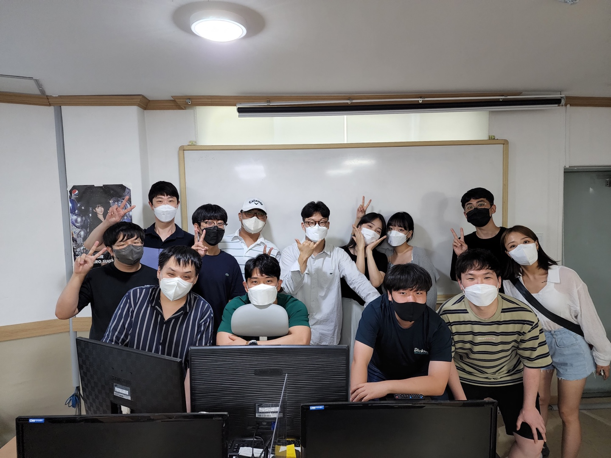

직업 훈련 교사👨🏫
- - 반응형 스마트웹&콘텐츠 개발자 양성과정 (2021.12.31 ~ 2022.07.20)
- - 임베디드 융합 개발 전문가 양성과정 (2022.08.01 ~ 2022.12.22)
대전 선화동에 위치한 DW아카데미에서 코딩교육을 진행했습니다.
클라우드를 처음 접하게 된 것은 2018년 온프레미스에서 클라우드로 이관하는 작업이였습니다. 대학교 때 Cisco 프로그램으로 네트워킹을 구성해본 적이
있어, 이관해야 하는 서버는 약 20대정도 였고, AWS docs와 유튜브 강의를 보면서 어렵지 않게 혼자 진행했습니다. 이관 작업 첫번째 목표는 퍼블릭
서브넷과 프라이빗 서브넷을 기준으로 서버를 배치하고, Bastion 서버를 프록시 서버로 만들어 WAS와 DB서버는 SSH 터널링 접속하게 세팅이였습니다. 그
다음 스텝은 다른 AWS 서비스(S3, CloudFront ...)를 추가로 사용했습니다.
교육 사진
